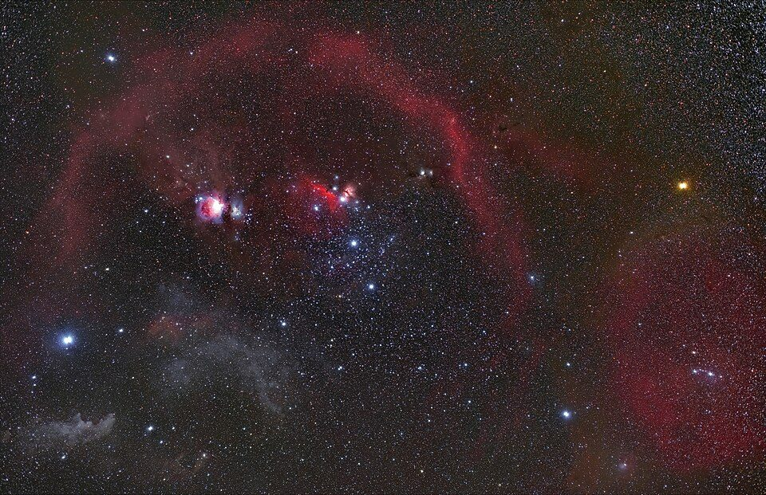

Universo · 6 fichas
Observar el cielo
Guía práctica para mirar el cielo a simple vista, con prismáticos o con telescopio: constelaciones, eclipses, lluvias de estrellas y el calendario de los próximos meses.
No hace falta ningún aparato para empezar: basta con salir de noche, dejar que los ojos se acostumbren a la oscuridad y saber dónde mirar. Esta sección reúne lo esencial para disfrutar del cielo desde cualquier lugar, con especial atención a lo que se puede ver desde España.
- Cómo empezar a observarConsejos prácticos para tu primera noche bajo las estrellas: dónde ir, cuándo salir, qué llevar y qué buscar.

Las constelacionesLas 88 figuras oficiales del cielo, sus leyendas y cómo encontrar las más fáciles: Orión, la Osa Mayor, Casiopea o el triángulo de verano. EclipsesPor qué ocurren, cómo verlos sin riesgo y los grandes eclipses de España: el de agosto de 2026 y el de agosto de 2027.
EclipsesPor qué ocurren, cómo verlos sin riesgo y los grandes eclipses de España: el de agosto de 2026 y el de agosto de 2027. Lluvias de estrellasPerseidas, Gemínidas, Cuadrántidas y demás: qué son las estrellas fugaces, cuándo verlas y cómo sacarles partido.
Lluvias de estrellasPerseidas, Gemínidas, Cuadrántidas y demás: qué son las estrellas fugaces, cuándo verlas y cómo sacarles partido. Prismáticos y telescopiosQué comprar para empezar, qué se puede ver con cada aparato y los errores más comunes al elegir un telescopio.
Prismáticos y telescopiosQué comprar para empezar, qué se puede ver con cada aparato y los errores más comunes al elegir un telescopio. Calendario astronómico 2026-2028Las citas del cielo de los próximos meses vistas desde España: lluvias de estrellas, eclipses, planetas y estaciones.
Calendario astronómico 2026-2028Las citas del cielo de los próximos meses vistas desde España: lluvias de estrellas, eclipses, planetas y estaciones.